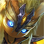

상대 영웅 상세 대응
鬼谷子
한 줄: 시야를 확보하고, 제어 후에.
상대 특성
은신 개시 보조 계열. 은신과 가속으로 아군을 진입시키고, 광역 제어로 진형을 묶는다.
라인전 대응
귀곡자가 보이지 않으면 라인을 깊게 밀지 않고, 은신이 풀린 뒤 2스킬로 붙잡는다.
교전·한타
아군 딜러 옆에서 은신 진입을 대기하고, 귀곡자가 제어를 쓴 뒤 점사한다.
하지 말 것
시야 없는 곳에서 혼자 라인을 미는 것.
상세 스킬
4개중국판 공식 스킬 설명을 한국어로 번역했습니다. 스킬명·쿨다운·수치는 패치에 따라 달라질 수 있으므로 게임 내 최신 설명을 우선하세요. 영웅 이름은 중국판 표기를 유지합니다.
-
패시브
전쟁의 예술
패시브: 鬼谷子이 적의 시야를 떠난 후 3초가 지나면 현웨이가 다시 지팡이로 돌아가고, 다음 일반 공격이 강화 공격으로 변경됩니다. 강화된 공격은 300(+45% 마법 계수)의 마법 피해를 입히고 범위 내의 적의 이동 속도를 1.5초 동안 50% 감소시킵니다. 강화 공격 사용 시 鬼谷子이 적의 시야에 없으면 전쟁의 예술의 쿨다운이 10초로 증가됩니다.
-
1스킬
선지자 · 션인
鬼谷子은 현미자에게 자신을 감싸라고 명령하여 주변 환경과 혼합되어 4초 동안 지속되는 위장 상태를 만듭니다. 위장 상태에서 鬼谷子은 이동 속도를 40% 증가시키고 접촉하는 각 적에게 450/540/630의 피해를 입힙니다. /720/810/900(+60% 마법 계수) 마법 피해, 적의 물리 및 마법 방어력을 25% 감소시키는 동시에 4초 동안 지속되며 각 적에 대해 최대 한 번 발동될 수 있습니다. 鬼谷子이 다른 방법으로 적에게 피해를 입히면 위장 효과가 사라집니다.
-
2스킬
애니미즘
鬼谷子은 자신 주위에 신비한 입자를 많이 소환하여 범위 내의 적에게 0.5초마다 100/120/140/160/180/200(+15% 마법 계수)의 마법 피해를 주며, 2초 동안 지속됩니다. 2초 후 신비한 입자가 모여 범위 내의 적에게 400(+60% 마법 계수)의 피해를 입힙니다. 마법 계수) 마법 피해를 입히고 동시에 적을 鬼谷子으로 끌어당겨 1초 동안 기절시킵니다. 피해가 적 영웅에게 적중하면 鬼谷子과 범위 내의 팀원은 500/600/700/800/900/1000(+100% 마법 계수) 피해를 상쇄할 수 있는 보호막을 받습니다.
-
3스킬
키리가쿠레 예언자
鬼谷子은 현미자에게 1500 거리 내에서 자신과 팀원을 감싸고 1초 후에 위장 상태로 들어갈 준비를 하라고 명령합니다. 위장 상태에서는 鬼谷子과 팀원의 이동 속도가 30% 증가합니다. 동시에 鬼谷子에 가장 가까운 적 영웅의 시야가 감지되고 위장 상태는 최대 4초 동안 지속됩니다. 위장 상태에서 일반 공격이나 스킬, 적에 의해 부정적인 효과가 발생할 경우 즉시 위장 상태가 해제됩니다.
탱커 기본: 스킬·유세·콤보·빌드·라인전 원칙은 元流之子 탱커 기본 운영에서 먼저 확인할 수 있습니다. 이 페이지는 鬼谷子 상대에 맞춘 대응입니다.